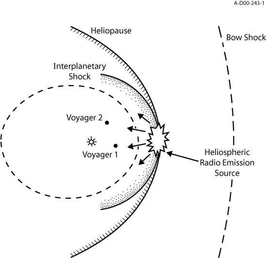

Космические радиоизлучения, обнаруженные радиотелескопами и преобразованные в звуковые сигналы
Пульсар Vela
Пульсары — маленькие и чрезвычайно плотные нейтронные выродившиеся
звезды, вращающие равномерно и испускающие импульсы
поляризованной радиации, которые появляются как яркие "маяки света".
Расположенный около центра Vela остаток от взрыва массивной звезды,
который произошел 10 000 лет назад, пульсар фактически ядро этой
разрушенной звезды, вращающейся с периодом 89.3 миллисекунды или
приблизительно 11 раз в секунду.
Пульсар PRS B0329+54
Этот пульсар — один из самых сильных из известных, также один из
первых обнаруженных. Он имеет период 715 миллисекунд, вращаясь 1.4 раза
в секунду.
Черная дыра GRS 1915+105
Теоретический астрономический объект, сформированный в
момент разрушения массивной звезды. Черные дыры — конечные точки
эволюции звезд, по крайней мере в 10 или в 15 раз более массивных чем
Солнце.
Остатки большого взрыва
Радиотелескопы получили эти звуки от абсолютно чёрного тела.
Ученые предполагают, что это остатки большого взрыва.
"Биение" Солнца
Гелиосеисмологи "слушают" Солнце, используя блок на борту
космического корабля SOHO.
Свистуны
Обнаруженные в диапазоне очень низких частот, звуки вызваны
ударами молнии в пределах нескольких тысяч км от приемника.
Рев Льва
Рев Льва — область, обнаруженная в пределах магнитосферы, где
плазма приходит в норму и заставляет радиоволны звучать подобно
ревущему льву. Здесь, сигнал длится приблизительно 2 секунды, и имеет
более низкий тон или подачу.
Звук атмосферы Земли
Этот звук, похожый на передачи от далеких цивилизаций фактически
прибывает из атмосферы Земли. Он складывается как шум из полученых
радиотелескопами радио и теле сигналов,
радиосигналов сотовых телефонов, наряду с сигналами самолётов.
Спутник Земли
Первый искусственный спутник Земли был запущен 4 октября 1957 года.
Кольца Сатурна
Сатурн наименее плотен из планет — его плотность 0.7 — меньше чем у
воды.
Магнитосфера Ганимеда
Зарегистрированные космическим кораблем НАСА Gallileo, эти
звуки показывают, что наибольшая луна солнечной системы имеет
магнитосферу, которая ограждает ее от магнитного влияния Юпитера.
Магнитосфера Юпитера
Электромагнитная активность около Ио при программе I31
Звуковое сопровождение демонстрирует интенсивность волнение
электромагнитного поля с резким подъёмом и внезапным спадом электронной
плотности около северного полюса Ио. Секция возрастания активности
начинается на 1/3 длины и соответствует высокой электронной плотности. Исследователи перевели электромагнитные волны в плазме около Ио на
"язык" звука. Он является результатом исследований тонкой заряженной
оболочки вокруг Ио с помощью оборудования Галилео, при его близком
пролёте около северного полюса 6 августа 2001 года. Место, где шум сильно возрастает, является областью, в которой Галилео
пересекает пути движущихся электронов вдоль линий магнитного поля
между Ио и Юпитером. Крутые изменения в уровне шума представляют собой
чёткие границы в этом соединительном маршруте, называемыми потоковыми
трубками. Интенсивность рёва напоминает об огромной мощности,
эквивалентной в 1000 раз большей, чем средняя электростанция,
вырабатываемой при движении Ио, как электрического проводника, в
магнитном поле Юпитера.
Электромагнитная активность около Ио при программе I32
Это звуковое сопровождением демонстрирует волнение электромагнитного
поля около южного полюса Ио. Эти данные были получены при пролёте Галилео около южного полюса 16
октября 2001 года.
Радиозвук столкнувшегося солнечного ветра с гелиопаузой — Вояджер 1

Странные радиосигналы Сатурна
Аппарат «Кассини» записывал радиосигналы, исходящие от
северного и южного полюса Сатурна, в течение трех лет. Оказалось, что
над поверхностью планеты имеются "точечные" радиоисточники, которые
перемещаются в магнитном поле и скапливаются у полюсов. По мнению
астрофизиков, такими источниками могут быть заряженные частицы, которые
попадают в атмосферу планеты. Теперь ученые, обработав эти сигналы,
сжали их и преобразовали в звуковой файл, сместив частоты в звуковую
область. Теперь таинственные звуки Сатурна продолжительностью 73
секунды cможете прослушать и Вы. Большая часть радиоизлучения
приходится на километровые волны. Впервые такие сигналы зафиксировал
аппарат «Вояджер-2» в 1980 году. В 2008 году, когда аппарат «Кассини»
сможет сфотографировать это явление с минимального расстояния, ученые
смогут окончательно дать ответ на очередную загадку Сатурна.
Ускорение через туман Титана
Эта запись — лабораторная реконструкция звуков, слышимых в
микрофоны Huygens. Несколько образцов, взятых в разное время в течение
спуска, объединены вместе и дают реалистическое воспроизводство того,
что путешественник на борту Huygens слышал бы в течение одной минуты
спуска через атмосферу Титана.
Радарное эхо от поверхности Титана
Эта запись была произведена, конвертируя в слышимые звуки
часть радарного эхо, полученного Huygens в течение последних километров
его спуска на Титан. Поскольку он приближался к поверхности, то и
увеличивается интенсивность. Ученые будут использовать интенсивность
эхо, чтобы судить о характере (природе) поверхности.